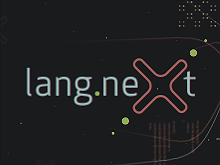Lang.NEXT 2012 is a cross-industry conference for programming language designers and implementers on the Microsoft Campus in Redmond, Washington. With three days of talks, panels and discussion on lea…
Teaching with Grace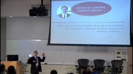[WMV] [0:46:00] [2012/04/25]We are engaged in the design of a new object-oriented educational programming language called Grace. Our motivation is frustration with available languages, none of which seems to be suited to our…
John Cook: Why and How People Use R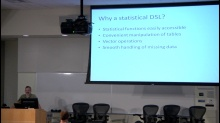[WMV] [0:35:24] [2012/04/21]R is a strange, deeply flawed language that nevertheless has an enthusiastic and rapidly growing user base. What about R accounts for its popularity in its niche? What can language designers learn…
Walter Bright: The D Programming Language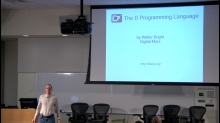[WMV] [0:40:13] [2012/04/20]The D Programming Language combines modeling power, modern convenience, and native efficiency into one powerful language. D embodies many new ideas in programming languages along with traditional…
Luke Hoban: ECMAScript 6 [WMV] [0:42:21] [2012/04/19]
[WMV] [0:42:21] [2012/04/19]The next iteration of the ECMAScript standard, expected to be ECMAScript 6, has been making solid progress since the completion of ES5 in 2009. Targeting standardization in 2013, ES6 is on track to…
Julia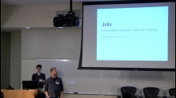[WMV] [0:40:54] [2012/04/19]Julia is a dynamic language in the tradition of Lisp, Perl, Python and Ruby. It aims to advance expressiveness and convenience for scientific and technical computing beyond that of environments like…
Andrei Alexandrescu: Three Unlikely Successful Features of D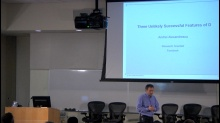[WMV] [0:49:30] [2012/04/17]Designing a programming language has a strong subjective component. There are features - such as type and property inference - that many would agree are useful, subject to proper language integration.…
Herb Sutter: (Not Your Fathers) C++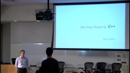[WMV] [0:44:29] [2012/04/15]What makes ISO C++11 "feel like a new language"? What things that we know about past C++ do we need to unlearn? Why is C++ designed the way it is – historically, and…
Gilad Bracha: Dart - A Well Structured Web Programming Language 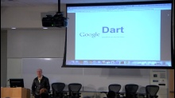[WMV] [1:05:28] [2012/04/15]Dart is a new programming language being developed at Google, designed to support web programming. Dart is a purely object-oriented, class-based single inheritance optionally typed language with…
Going Deeper with Project Roslyn: Exposing the C# and VB compilers code analysis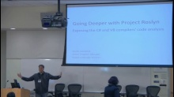[WMV] [0:44:28] [2012/04/15]Until now, the VB and C# compilers have been used as black boxes. You put text in, and you get out a binary file. In our long-lead project, codename "Roslyn," we are changing that dynamic…
Lang.NEXT 2012 Expert Panel: Native Languages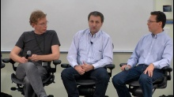[WMV] [0:56:48] [2012/04/12]Native programming languages panel hosted by Martyn Lovell.
Lang.NEXT 2012 Expert Panel: Web and Cloud Programming (and more)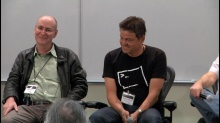[WMV] [0:54:20] [2012/04/10]What happens when Anders Hejlsberg, Gilad Bracha, Martin Odersky, and Peter Alvaro get together for an interactive panel moderated by Erik Meijer? Tune in.
Keynote - Martin Odersky: Reflection and Compilers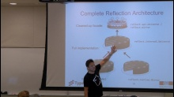[WMV] [1:09:26] [2012/04/02]Reflection and compilers do tantalizing similar things. Yet, in mainstream, statically typed languages the two have been only loosely coupled, and generally share very little code. In this talk I…
IKVM.NET: Building a Java VM on the .NET Framework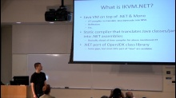[WMV] [0:38:51] [2012/03/20]Java and .NET are like twins separated at birth, but what if you actually want to run your Java code on .NET? IKVM.NET aims to provide a full Java platform on top of the .NET Framework and in this…
Java 8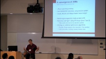[WMV] [0:44:20] [2012/03/20]This talk will present updates on Lambda, JSR 292, as well as some other VM- and language-related OpenJDK items.
Information Rich Programming with F# 3.0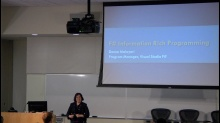[WMV] [0:39:21] [2012/03/20]Modern programming thrives on rich spaces of data, information and services. F# 3.0 brings integrated support for Information Rich Programming to the .NET platform. F# Type Providers and F# Queries…
Bloom: Disorderly Programming for a Distributed World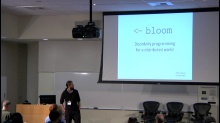[WMV] [0:44:22] [2012/03/20]I will present Bloom, a programming language targeted at developers of complex cloud computing and distributed systems. Bloom is a 'disorderly' language: it differentiates itself from most common…
Pervasive Parallelism in Scala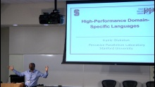[WMV] [0:40:09] [2012/03/20]
Language Support for Asynchronous Programming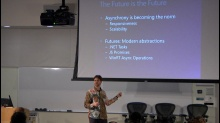[WMV] [0:42:48] [2012/03/20]Asynchronous programming is what the doctor usually orders for unresponsive client apps and for services with thread-scaling issues. This usually means a bleak departure from the imperative…
Martyn Lovell: The Windows Runtime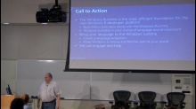[WMV] [0:43:45] [2012/03/20]The Windows Runtime is Microsoft's new developer platform. It is designed from the ground up to give developers a wide range of choices, allowing apps to be authored in a broad range of languages—from…
Reverend Bayes, meet Countess Lovelace: Probabilistic Programming for Machine Learning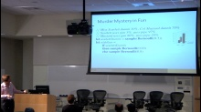[WMV] [0:39:25] [2012/03/20]We propose a marriage of probabilistic functional programming with Bayesian reasoning. Infer.NET Fun turns the simple succinct syntax of F# into an executable modeling language – you can code up the…
A Means to Many Ends: 10+ Years of Haskell at Galois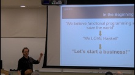[WMV] [0:42:51] [2012/03/20]Galois started out using Haskell because it was our first love. This talk will be about why we *still* use it. Yes, we still love Haskell, but as the Beatles said, love don't pay the bills. I'll…
Go In Three Easy Pieces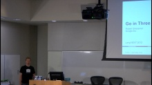[WMV] [0:43:42] [2012/03/20]Go is a statically typed, compiled language with a dynamic and lightweight feel. With Go you get the efficiency benefits of being close to the machine–your programs compile to native code–with the…